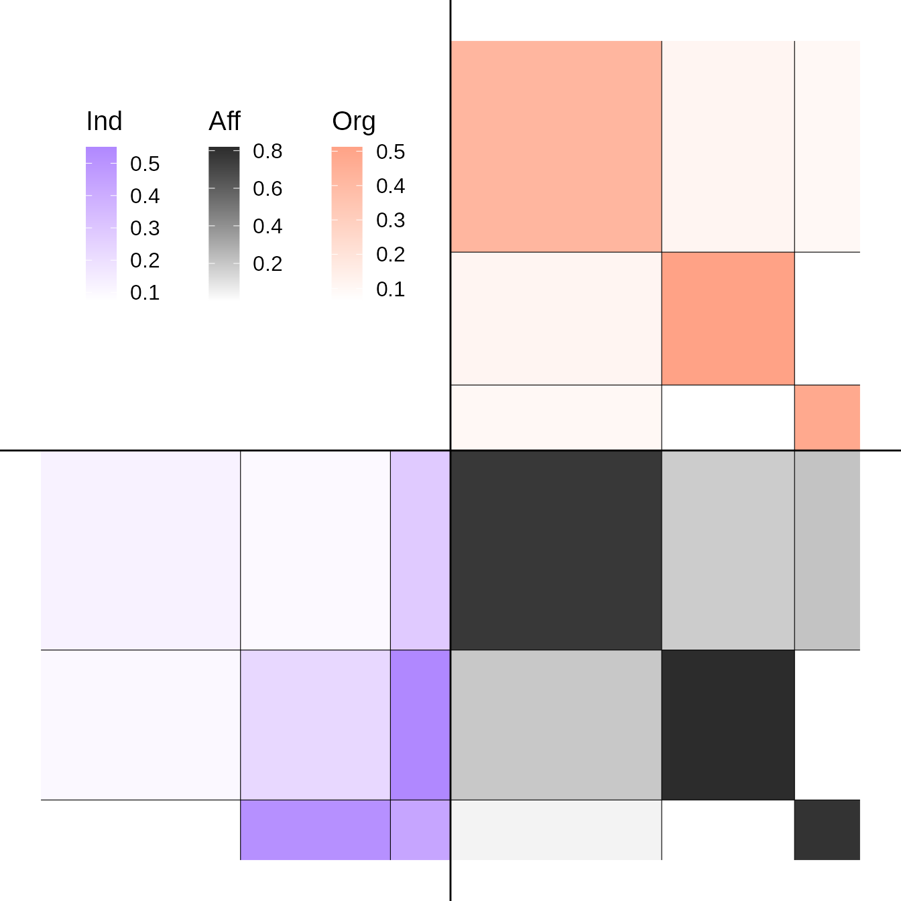

The package deals with multilevel network defined as the junction of two interaction network (adjacency matrices) linked by an affiliation relationship (affiliation matrix).
First, we’re going to simulate a multilevel network with 100 individuals and 3 clusters of individuals for the lower level and 50 organizations and 3 clusters for the upper level. The inter-organizational level will have an assortative structure and will be undirected, the inter-individual’s one a core-periphery structure and will be directed. Affiliation matrix will be generated by a power law and the dependency between the latent blocks of the two levels will be strong.
set.seed(123)
my_mlvsbm <- MLVSBM::mlvsbm_simulate_network(
n = list(I = 60, O = 40), # Number of nodes for the lower level and the upper level
Q = list(I = 3, O = 3), # Number of blocks for the lower level and the upper level
pi = c(.5, .3, .2), # Block proportion for the upper level, must sum to one
gamma = matrix(c(.8, .1, .1, # Block proportion for the lower level,
.1, .8, .1,
.1, .1, .8), # each column must sum to one
nrow = 3, ncol = 3, byrow = TRUE),
alpha = list(I = matrix(c(.1, .1, .3,
.1, .2, .5,
.1, .5, .5),
nrow = 3, ncol = 3, byrow = TRUE), # Connection matrix
O = matrix(c(.5, .1, .1,
.1, .5, .1,
.1, .1, .5),
nrow = 3, ncol = 3, byrow = TRUE)),# between blocks
directed = list(I = TRUE, O = FALSE), # Are the upper and lower level directed or not ?
affiliation = "preferential", # How the affiliation matrix is generated
no_empty_org = FALSE) # May the affiliation matrix have column suming to 0The network is stocked in an R6 object of type MLVSBM.
Now, we are going to create a multilevel network object from 2 existing adjacency matrix and an affiliation matrix :
lower_level <- my_mlvsbm$adjacency_matrix$I # matrix of size nI x nI
upper_level <- my_mlvsbm$adjacency_matrix$O # matrix of size nO x nO
affiliation <- my_mlvsbm$affiliation_matrix # matrix of size nI x nO
my_mlvsbm2 <- MLVSBM::mlvsbm_create_network(X = list(I = lower_level, O = upper_level),
A = affiliation)We can now infer the parameters, blocks and edge probabilities of our network by using the mlvlsbm_esimate_network function on an MLVSBM object. It will return the best model for this network as another R6 object of type FitMLVSBM.
fit <- MLVSBM::mlvsbm_estimate_network(my_mlvsbm, nb_cores = 1L)
#>
#>
[1] "Infering lower level :"
#> [1] "# blocks: 3, ICL = -1752.99110620455 !"
#>
#>
[1] "Infering upper level :"
#> [1] "# blocks: 3, ICL = -429.333753035444 !"
#> [1] "======= # Individual clusters : 3 , # Organisation clusters 3, ICL : -2161.21593501663========"
#> [1] "======= # Individual blocks : 3 , # Organizational blocks 3, ICL : -2161.21593501663========"
#> [1] "ICL for independent levels : -2182.32485924"
#> [1] "ICL for interdependent levels : -2161.21593501663"
#> [1] "=====Interdependence is detected between the two levels!====="Generic functions are provided to print, plot, extract the model parameters and predict the existence of a dyad for the fitted network.
print(fit)
#> Multilevel Stochastic Block Model -- bernoulli variant
#> =====================================================================
#> Dimension = ( 60 40 ) - ( 3 3 ) blocks.
#> =====================================================================
#> * Useful fields
#> $independent, $distribution, $nb_nodes, $nb_clusters, $Z
#> $membership, $parameters, $ICL, $vbound, $X_hat
plot(fit, type = "matrix")
#> Joining, by = c("name", "group")
#> Joining, by = "name"
coef(fit)
#> $alpha
#> $alpha$I
#> [,1] [,2] [,3]
#> [1,] 0.23076927 0.5384598 0.09440602
#> [2,] 0.49679322 0.4545447 0.08333412
#> [3,] 0.09615434 0.2840906 0.13419909
#>
#> $alpha$O
#> [,1] [,2] [,3]
#> [1,] 0.66665873 0.09848632 0.05555697
#> [2,] 0.09848632 0.48051884 0.11363719
#> [3,] 0.05555697 0.11363719 0.53030085
#>
#>
#> $pi
#> $pi$O
#> [1] 0.1500005 0.5499994 0.3000001
#>
#>
#> $gamma
#> [,1] [,2] [,3]
#> [1,] 0.09091169 0.1923087 8.695625e-01
#> [2,] 0.72726867 0.0384628 1.304356e-01
#> [3,] 0.18181964 0.7692285 1.956515e-06
pred <- predict(fit)Output of the algorithm are stocked in the MLVSBM and FitMLVSBM objects. The MLVSBM object stocks information of the observed or simulated network and a list of all the fitted SBM and MLVSBM models.
my_mlvsbm$ICL # A data frame of the inferred models
#> index Q_I Q_O ICL
#> 1 1 3 3 -2161.216
my_fit <- my_mlvsbm$fittedmodels[[which.max(my_mlvsbm$ICL$ICL)]] # The fitted model with index the highest ICL
my_mlvsbm$ICL_sbm # The ICL of the SBM
#> $lower
#> [1] -Inf -Inf -1752.991 -Inf -Inf -Inf -Inf
#> [8] -Inf -Inf -Inf
#>
#> $upper
#> [1] -Inf -Inf -429.3338 -Inf -Inf -Inf -Inf
#> [8] -Inf -Inf -Inf
my_sbm_lower <- my_mlvsbm$fittedmodels_sbm$lower[[3]] # A fitted SBM for the lower level with 3 blocks
my_sbm_upper <- my_mlvsbm$fittedmodels_sbm$upper[[2]] # A fitted SBM for the upper level with 2 blocksYou can also get the parameters and the clustering of the fitted model from the FitMLVSBM object as follows:
fit$parameters # The connectivity and membership parameters of the model
#> $alpha
#> $alpha$I
#> [,1] [,2] [,3]
#> [1,] 0.23076927 0.5384598 0.09440602
#> [2,] 0.49679322 0.4545447 0.08333412
#> [3,] 0.09615434 0.2840906 0.13419909
#>
#> $alpha$O
#> [,1] [,2] [,3]
#> [1,] 0.66665873 0.09848632 0.05555697
#> [2,] 0.09848632 0.48051884 0.11363719
#> [3,] 0.05555697 0.11363719 0.53030085
#>
#>
#> $pi
#> $pi$O
#> [1] 0.1500005 0.5499994 0.3000001
#>
#>
#> $gamma
#> [,1] [,2] [,3]
#> [1,] 0.09091169 0.1923087 8.695625e-01
#> [2,] 0.72726867 0.0384628 1.304356e-01
#> [3,] 0.18181964 0.7692285 1.956515e-06
fit$Z # The block membership of each nodes
#> $I
#> [1] 1 3 3 1 3 2 1 2 1 3 1 3 3 1 3 3 1 1 3 1 1 1 3 1 3 3 1 1 1 1 3 1 2 2 1 3 2 3
#> [39] 3 3 2 1 1 1 2 2 1 3 3 1 2 1 3 1 2 2 2 1 3 3
#>
#> $O
#> [1] 3 2 2 2 1 2 1 1 3 2 3 3 3 2 2 2 2 3 2 2 2 3 2 3 2 2 1 1 1 2 2 3 2 3 2 2 3 2
#> [39] 2 3
fit$vbound # A vector of the varational bound of the VEM algorithm
#> [1] -2088.49
tau <- fit$membership # The variational parameters of the model
pred <- fit$X_hat # The links predictions for each level